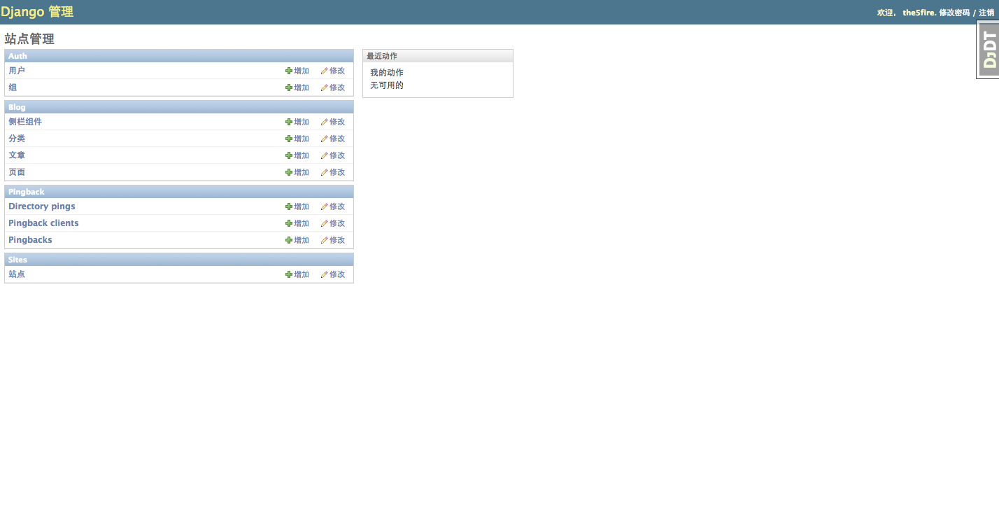
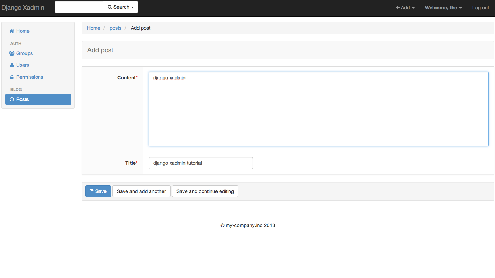

- on Sat 28 June 2014
Category: django-admindjango-xadminxadmin
Introduction
This guide assumes some basic knowledge of Django and Django's admin. The goal of the guide is to make up for the lack of xadmin document. I hope this guide will help those who are interested in xadmin but don't know where to start.
Claim: I'm not native english speaker, so if there is any grammar mistake please help me to correct
Why xadmin
Django-xadmin is an awesome opensource project base on Django. Its slogan is Drop-in replacement of Django admin comes with lots of goodies, fully extensible with plugin support, pretty UI based on Twitter Bootstrap. . And it did.
Compare with Django's contrib admin, xadmin is beautifull and easy to customize. Django built-in admin is good, but sometimes can't meet my needs, especial for UI and dashboard.
In the last two years, I have done a lot of work on the admin. I did some complex customization by read its source code. I use django admin in my work time and off hours. I also tried django-admin-bootstrap, and customize its dashboard. All customization I had done can work well. but it made me feel uncomfortable.
So, when I found xadmin, I have a try, and decided to use xadmin replace django admin. It met most of my needs, and most important it compatibility with django's admin!! (Honest to say, I found xadmin and djadmin2 at the same time. xadmin is more practical.)
Source: https://github.com/sshwsfc/django-xadmin && Website: http://sshwsfc.github.io/django-xadmin/
There are two screenshots of my blog's admin:
with django admin:
with xadmin:

Enable xadmin
Just like django admin, it's easily enabled xadmin.
- First of all, install django-xadmin by pip install django-xadmin.
$ pip install django-xadmin Downloading/unpacking django-xadmin Downloading django-xadmin-0.5.0.tar.gz (1.0MB): 1.0MB downloaded Running setup.py egg_info for package django-xadmin .... Successfully installed django-xadmin django-crispy-forms Cleaning up...
- Second, add xadmin and cripsy_forms to your INSTALLED_APPS.
INSTALLED_APPS = ( 'django.contrib.auth', 'django.contrib.contenttypes', 'django.contrib.sessions', 'django.contrib.sites', 'django.contrib.messages', 'django.contrib.staticfiles', # 'django.contrib.admin', 'django_xmlrpc', 'xadmin', 'crispy_forms', )
- Third, enable xadmin in urls.
# comment next two line to avoid conflict #from django.contrib import admin #admin.autodiscover() import xadmin xadmin.autodiscover() urlpatterns = patterns('', url(r'^xadmin/', include(xadmin.site.urls), name='xadmin'), )
It is very easy, isn't it.
Write your basic adminx.py
As django admin's code write to admin.py, xadmin's code should be writing to adminx.py.
Xadmin support the same attribute as django admin, But xadmin provide different method. It means you can keep your attributes defination if you want to use xadmin.
The project's structure with xadmin maybe look like this:
selfblog ├── __init__.py ├── blog │ ├── __init__.py │ ├── adminx.py │ ├── api.py │ ├── models.py │ ├── templates │ │ ├── index.html │ ├── tests.py │ └── views.py ├── selfblog │ ├── __init__.py │ ├── settings.py │ ├── urls.py │ ├── wsgi.py ├── manage.py
Let's writing sample code in models.py:
# models.py from django.db import models class Post(models.Model): title = models.CharField(max_length=50) content = models.TextField() created_time = models.DateTimeField(auto_now_add=True) update_time = models.DateTimeField(auto_now=True) def __unicode__(self): return self.title
Now adminx.py:
import xadmin from .models import Post class PostAdmin(object): search_fields = ('id', 'title', 'content') fields = ('content', 'title') list_display = ('preview', 'title', 'created_time') list_display_links = ('title', ) ordering = ('-update_time', ) list_per_page = 15 def preview(self, obj): return ''' <span><a href="/%s" target="_blank">preview</a></span> ''' % (obj.id, ) preview.short_description = 'Operations' preview.allow_tags = True # fields above just like django admin xadmin.site.register(Post, PostAdmin)
Until now, it seems like that we are writing django admin code, but let's take a look at what we have get.
Add the blog app to your INSTALLED_APPS, then python manage.py syncdb and create an super user.
Now, run our project: python manage.py runserver, visit: http://localhost:8000/xadmin/
Overriding predefined xadmin methods
Django-xadmin offers different method. As for django admin, it offers some method for example: save_form(self, request, form, change), save_model(self, request, obj, form, change), etc. Xadmin offers the similar method, I list them below, and add some comments:
- save_models(self):
Just provide the self param, you can get request and obj from self.request and self.new_obj. There are a list attributes we can get from the self object:
- request
- new_obj -- the new form data need to save.
- org_obj -- original data of this model instance.
- form_obj
You can do some custom save operation by overriding this method.
- get(self, request, *args, **kwargs):
Django view for the model instances change list/actions page and model instance edition page. It's just like django admin's change_view and changelist_view.
There are many other methods, You can find them in these files: xadmin.views.list.py, xadmin.views.edit.py.
How to view the history of the Model
In django admin, you can view any change history of instance. In xadmin, we need django-reversion to achieve this goal. there are four simple step to enable reversion in xadmin:
pip install django-reversion
Add reversoin to INSTALLED_APPS and enable it in urls:
from xadmin.plugins import xversion xversion.register_models()define reversion_enable = True in your FooAdmin(object):
class FooAdmin(object): reversion_enable = TrueAt last, syncdb: python manage.py syncdb